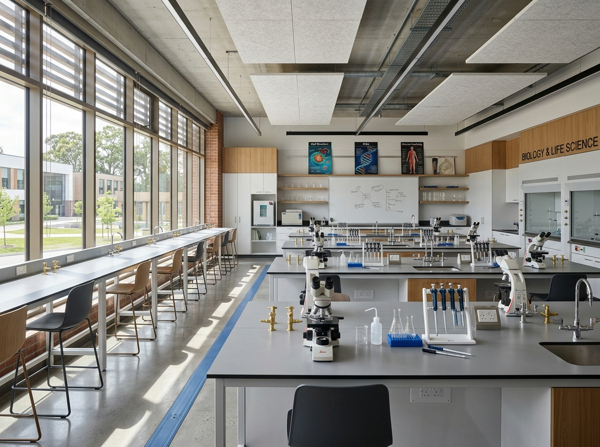
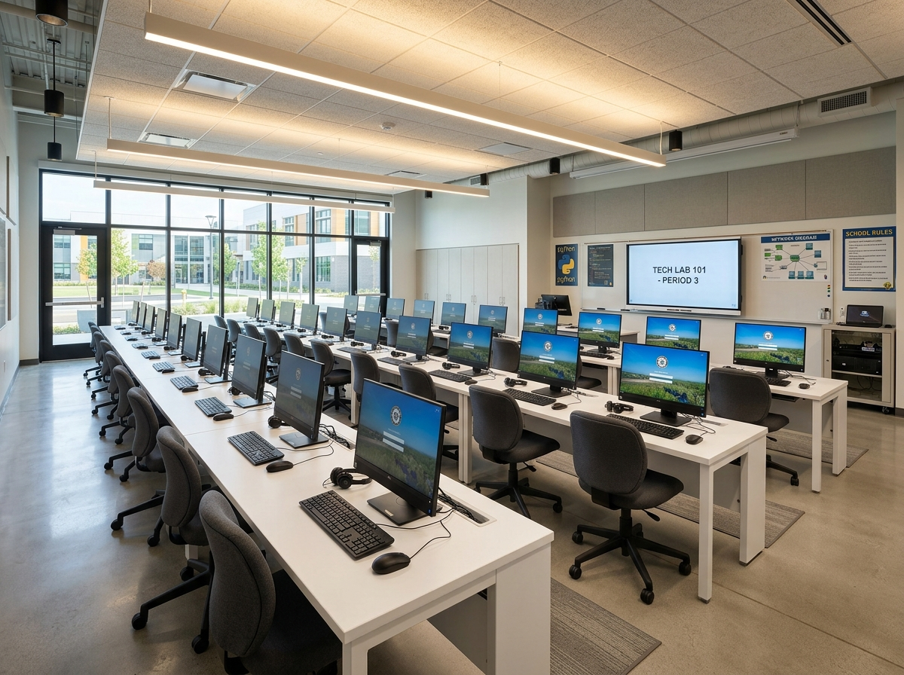

Ciclos Formativos & Proposta Educativa
Um percurso pedagógico contínuo e equilibrado, orientado para a solidez intelectual, a formação do caráter e a preparação para o mundo profissional.
Pré-escolar
A fase pré-escolar no Complexo Escolar Sanjukila é pensada para promover um ambiente acolhedor, seguro e estimulante. É o momento em que as crianças desenvolvem a coordenação motora, as primeiras noções de convivência em grupo e o entusiasmo inicial pela descoberta.
Com rotinas estruturadas, brincadeiras orientadas e primeiros contactos lúdicos com a língua inglesa, proporcionamos aos mais pequenos uma base afetiva e cognitiva segura para a transição escolar.

Ensino Primário
No Ensino Primário, o Sanjukila consolida a alfabetização, a fluência leitora e a matemática fundamental. Nossos educadores acompanham o ritmo de cada aluno com paciência, rigor e entusiasmo pedagógico.
O currículo integra ciências elementares, expressão artística, educação física e a progressão do regime bilíngue em Português e Inglês, estimulando hábitos de estudo consistentes desde cedo.

I Ciclo do Ensino Secundário
Correspondente à 7.ª, 8.ª e 9.ª classes, o I Ciclo marca o aprofundamento das matérias científicas, históricas e geográficas. Os estudantes começam a utilizar os laboratórios de ciências e a sala de informática de forma intensiva.
O objetivo principal é dotar o adolescente de autonomia intelectual, espírito de equipa e capacidade de pesquisa estruturada, preparando o caminho para as decisões de ciclo superior ou técnico.

II Ciclo do Ensino Secundário
O II Ciclo (10.ª, 11.ª e 12.ª classes) orienta o jovem para a maturidade académica e para o ingresso com distinção no Ensino Superior.
Com foco em áreas das Ciências Físicas e Biológicas, Ciências Económico-Jurídicas e Humanas [conforme matriz oficial da instituição], os estudantes consolidam a argumentação analítica, escrita formal e pensamento crítico necessário para os exames nacionais.

Uma experiência escolar preparada para um mundo global.
O Complexo Escolar Sanjukila apresenta um regime bilíngue em Português e Inglês, ampliando as possibilidades de aprendizagem e contacto dos alunos com diferentes contextos.
Vantagem Competitiva
Preparar os alunos para liderar em Angola e dialogar com o mundo inteiro com confiança e fluência.
Ensino Técnico Profissional
O Ensino Técnico Profissional do Sanjukila qualifica os estudantes com saberes aplicados, vivência laboratorial e contacto com projetos práticos, respondendo diretamente às exigências das empresas e do setor produtivo em Angola.
Com uma estrutura curricular desenhada para até 8 áreas de especialização técnica, os estudantes formam-se aptos tanto para o exercício profissional imediato quanto para a progressão no ensino superior de engenharia e tecnologia.
Pilares da Nossa Formação Técnica
-
Laboratórios e Oficinas Especializadas:Aulas experimentais que reproduzem práticas profissionais contemporâneas.
-
Habilidades Práticas e Resolução de Problemas:Projetos interdisciplinares e trabalho de equipa sob supervisão docente.
-
Ética Profissional e Liderança:Desenvolvimento de responsabilidade, rigor e compromisso com o resultado.